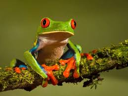
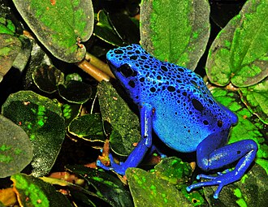
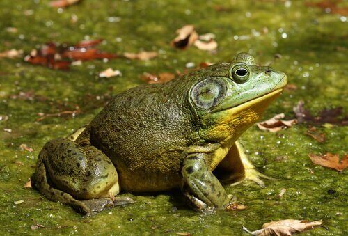

Kırmızı Gözlü Ağaç Kurbağası
Gece avcılarını korkutmak için o meşhur kırmızı gözlerini kullanır.

Mavi Zehirli Ok Kurbağası
Doğadaki en parlak maviye sahiptir ama dokunmak çok tehlikelidir!

Boğa Kurbağası
Derin sesiyle göletlerin efendisidir. Oldukça büyük ve güçlüdür.